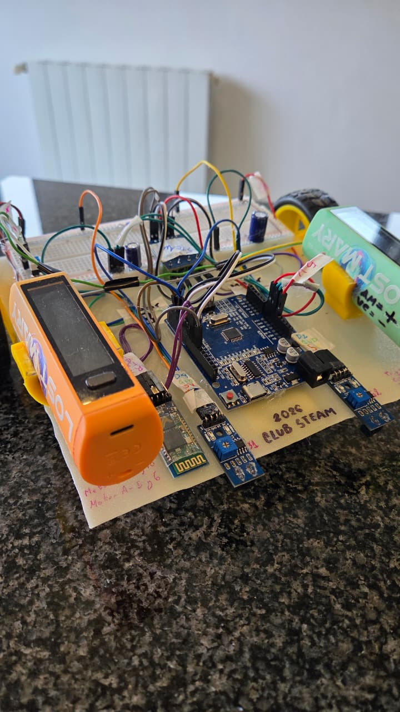
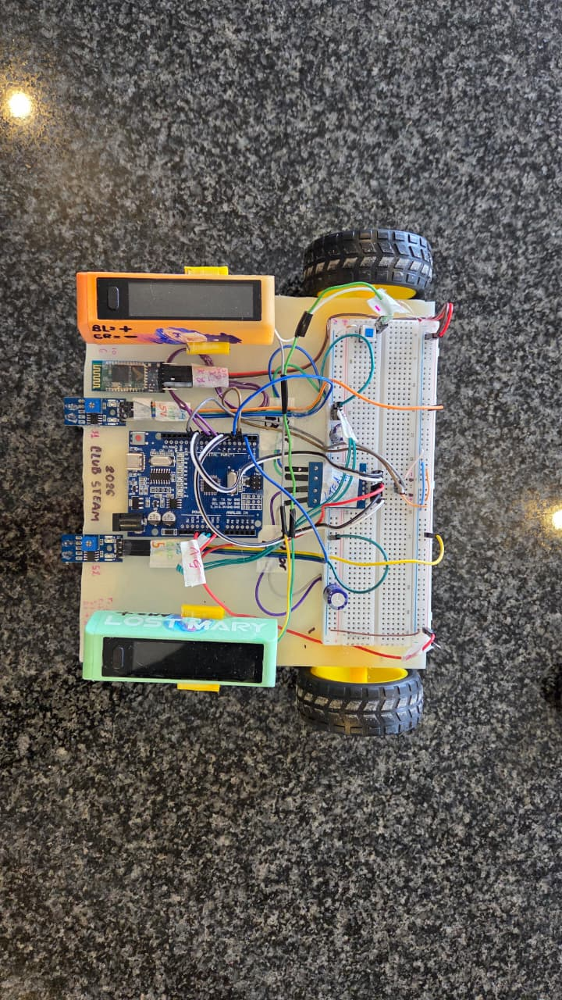

¿Qué problema resuelve o qué te dio ganas de hacerlo?
La idea de Steamy I es aprender sobre el control de actuadores y la lectura de sensores usando Arduino.
¿Cómo funciona?
Steamy se conecta mediante BT al celular usando el módulo HC-05 y una app creada en app inventor.
¿Qué usaste para construirlo?
| Material / herramienta | Cantidad | Nota |
|---|---|---|
| Arduino Uno | 1 | Microcontrolador |
| Puente H | 1 | L9110S |
| Motores Reductores | 2 | |
| Powerbank | 1 | Alimentación del circuito |
| Protoboard | 1 | |
| Cables Jumpers | — | |
| Base o "chasis" | 1 | Estructura del robot |
| HC-05 | 1 | Módulo Bluetooth |
| Sensor Últrasonico | 1 | Detección de obstaculos. |
| Sensores Infrarojos | 2 | Para seguir líneas |
Fotos, diagramas o capturas


Cómo replicarlo, paso a paso
-
Conseguí los materiales y revisá el pinout
Juntá lo de la lista de materiales de arriba. Antes de conectar nada, revisá el pinout de tu Arduino para verificar que los pines que vas a usar no estén ocupados por otro proceso — así evitás dañar el microcontrolador o encontrar problemas sin saber bien qué los causa.
-
Hacé las conexiones
Conectá los 4 pines de control del puente H a los pines 5, 6, 9 y 10 del Arduino (dos por cada motor). Conectá el RX del módulo HC-05 al pin 8 y el TX al pin 7. Alimentá el conjunto con la powerbank.
-
Cargá el programa en el Arduino
Instalá la librería
SoftwareSerial.hdesde el gestor de librerías del IDE de Arduino, copiá el código de la sección "Código y archivos" de abajo y subilo a la placa. Si el puerto no aparece en la lista, probablemente falten los drivers USB-Serial (por ejemplo el CH340): instalalos acá. -
Controlalo desde el celular
Conectate por Bluetooth al HC-05 desde la app hecha en App Inventor y mandale comandos:
Fadelante,Batrás,Lizquierda,Rderecha,Sdetener, yVseguido de un número de 0 a 255 para regular la velocidad.
¿Dónde está el código o los archivos del proyecto?
#include <SoftwareSerial.h>
#define rxPin 7
#define txPin 8
// Motors pins (PWM)
int m1a = 5;
int m2a = 6;
int m1b = 9;
int m2b = 10;
// Speed
int speed = 100;
SoftwareSerial bt(rxPin, txPin);
void setup() {
// hc-05
pinMode(rxPin, INPUT);
pinMode(txPin, OUTPUT);
// motors
pinMode(m1a, OUTPUT);
pinMode(m2a, OUTPUT);
pinMode(m1b, OUTPUT);
pinMode(m2b, OUTPUT);
// Serial and Bluetooth begin
Serial.begin(9600);
bt.begin(9600);
}
void loop() {
if (bt.available() > 0) {
char cmd = bt.read();
Serial.println(cmd);
if (cmd == '\n' || cmd == '\r') {
return;
}
// Get speed from app
if (cmd == 'V') {
speed = bt.parseInt();
speed = constrain(speed, 0, 255);
}
if (cmd == 'F') {
move();
} else if (cmd == 'B') {
back();
} else if (cmd == 'L') {
left();
} else if (cmd == 'R') {
right();
} else if (cmd == 'S') {
stop();
}
}
}
void move() {
analogWrite(m1a, speed);
analogWrite(m2a, 0);
analogWrite(m1b, speed);
analogWrite(m2b, 0);
}
void back() {
analogWrite(m1a, 0);
analogWrite(m2a, speed);
analogWrite(m1b, 0);
analogWrite(m2b, speed);
}
void stop() {
analogWrite(m1a, 0);
analogWrite(m2a, 0);
analogWrite(m1b, 0);
analogWrite(m2b, 0);
}
void left() {
analogWrite(m1a, speed);
analogWrite(m2a, 0);
analogWrite(m1b, 0);
analogWrite(m2b, 0);
}
void right() {
analogWrite(m1a, 0);
analogWrite(m2a, 0);
analogWrite(m1b, speed);
analogWrite(m2b, 0);
}
Desafíos y qué aprendiste
Un error que suele aparecer al momento de cargar el programa es que el Arduino no aparezca en la lista de puertos. Generalmente esto ocurre por la ausencia de los drivers USB-Serial (por ejemplo, el CH340). Si te pasa, seguí este tutorial para instalarlos.
Posibles mejoras
- Completar: una mejora posible
- Completar: otra mejora posible
Agradecimientos
Completar: a quién querés agradecer o qué fuentes usaste de referencia.